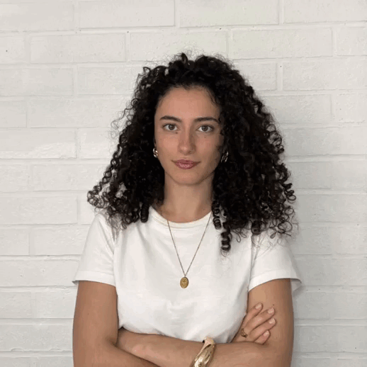

01
Carolina
DETETIVESou a Carolina e, a curiosidade acompanha-me desde sempre. A minha fase dos porquês nunca terminou, apenas encontrou um novo espaço na Cruza. Gosto de observar, questionar e procurar respostas para lá do óbvio, porque acredito que cada detalhe pode revelar uma nova perspetiva. No mundo da publicidade, não basta ter uma ideia criativa é preciso compreender as pessoas, os seus comportamentos e aquilo que realmente as motiva. Investigo tendências, analiso informação e descubro novas pistas para transformar dados em estratégias com impacto. Na Cruza, sou a Cruza-Pistas.